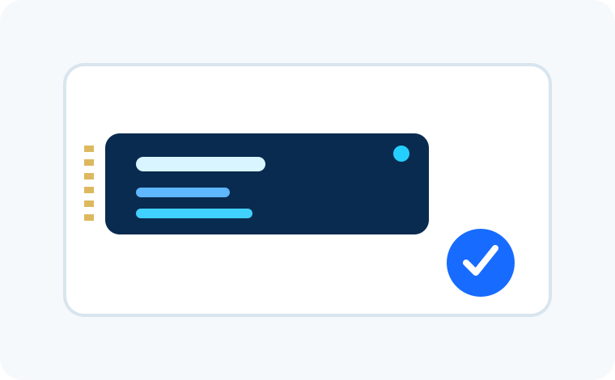

RafaDoug Informática
Assistência e soluções em informática.
Seu computador está lento, travando ou dando problema? A RafaDoug ajuda a identificar a causa, explicar as opções e encontrar uma solução sem complicação.
Informática sem enrolação.
Quando um equipamento começa a falhar, a pior parte costuma ser não saber se o problema é simples, se vale a pena consertar ou se alguém vai tentar vender algo desnecessário. A RafaDoug começa pelo diagnóstico e pela explicação do problema.
O objetivo é ajudar você a tomar uma decisão com mais segurança: entender o que precisa ser feito, quais opções existem e só então seguir para o serviço mais adequado.
Conhecer a empresa →Encontre o serviço pelo problema que você está enfrentando

Antes de comprar uma peça, vale conferir se ela realmente serve para você.
A área de recomendações reúne guias e comparações de produtos. A proposta não é virar uma loja, mas ajudar na decisão de compra.
Ver recomendaçõesDo problema até o atendimento, sem complicação


Não sabe exatamente qual serviço precisa?
Explique o problema do seu jeito. A gente começa entendendo a situação e direciona você para o atendimento mais adequado.
Rua Aparecida Araújo Martucci, 87, Jardim Planalto, Aguaí - SP